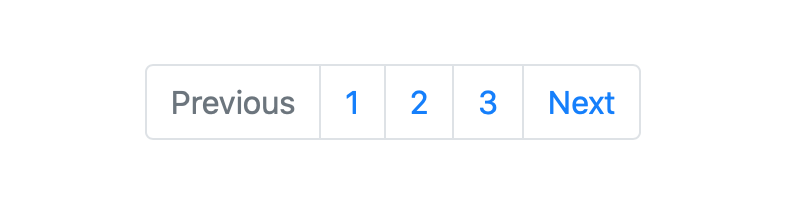

12. Aug 2019
Screenshot of Bootstrap pagination
My latest SwiftUI demo project fetches data from a REST API and then paginates the responses. That’s why I was looking for an easy way to add pagination support to the SwiftUI List view.
In the current beta (Xcode 11 beta 5), there isn’t a ready-to-use functionality provided. That’s why we’ll implement a simple solution in the next few minutes.
While we can access an item in the current iteration in the content block of the List view, we know nothing about its current position in the list or how close we are to the end of the list. That’s where pagination comes in.
Pagination can mean different things to different people. So let’s start by defining my desired end goal:
During scrolling, the list should fetch and append the items of the next pages. A loading view should be displayed when the user reaches the end of the list and a request is still in progress.
With this end in mind, let’s implement a solution that fixes these problems and adds pagination support to the List view.
In this section, we’ll take a look at two different approaches. While the first approach is more obvious, advanced users may appreciate the user-oriented functionality of the second approach.
A simple solution is to check if the item in the current iteration is the last item of the list. If that’s true, we trigger an asynchronous request to fetch the items of the next page.
RandomAccessCollection+isLastItem
Because the List view supports RandomAccessCollection we can create an extension and implement an isLastItemfunction. The key is the Self requirement, which restricts the extension to collections where the elements conform to the Identifiable protocol.
extension RandomAccessCollection where Self.Element: Identifiable {
func isLastItem<Item: Identifiable>(_ item: Item) -> Bool {
guard !isEmpty else {
return false
}
guard let itemIndex = firstIndex(where: { $0.id.hashValue == item.id.hashValue }) else {
return false
}
let distance = self.distance(from: itemIndex, to: endIndex)
return distance == 1
}
}
You pass an item conforming to the Identifiable protocol to the function, and it returns true if the item is the last item in the collection.
The function looks for the index of the given item in the collection. It uses the hash value of the
*id*property (requirement of the*Identifiable*protocol) to compare it to the other items in the list. If the item index is found, that means the distance between the item index and the end index has to be exactly one (the end index is equal to the current number of items in the collection). That’s how we know the given item is the last item.
Instead of comparing the hash values, we can use the type-erased wrapper AnyHashable to directly compare the ids which are of the type Hashable.
guard let itemIndex = firstIndex(where: { AnyHashable($0.id) == AnyHashable(item.id) }) else {
return false
}
Now that the groundwork is laid, we can implement the user interface.
User interface
We want to trigger a list update if the end is reached. To achieve that we can use the onAppear modifier on the root view of each item. (In this example, it’s a VStack.) This calls thelistItemAppears function below. We’ll take a look at that in a minute.
If the item of the current iteration is the last item, a loading view will be shown to the user. In this simple example, it’s the Text(“Loading …”).
Since SwiftUI is declarative, the following code should be self-explanatory:
struct ListPaginationExampleView: View {
@State private var items: [String] = Array(0...24).map { "Item \($0)" }
@State private var isLoading: Bool = false
@State private var page: Int = 0
private let pageSize: Int = 25
var body: some View {
NavigationView {
List(items) { item in
VStack(alignment: .leading) {
Text(item)
if self.isLoading && self.items.isLastItem(item) {
Divider()
Text("Loading ...")
.padding(.vertical)
}
}.onAppear {
self.listItemAppears(item)
}
}
.navigationBarTitle("List of items")
.navigationBarItems(trailing: Text("Page index: \(page)"))
}
}
}
The helper function
***listItemAppears\***internally checks if the given item is the last item. If it’s the last item the current page is increased, and the items of the next page are appended to the list. In addition, we keep track of the loading state through the***isLoading\***variable, which defines when to show the loading view.
extension ListPaginationExampleView {
private func listItemAppears<Item: Identifiable>(_ item: Item) {
if items.isLastItem(item) {
isLoading = true
/*
Simulated async behaviour:
Creates items for the next page and
appends them to the list after a short delay
*/
DispatchQueue.main.asyncAfter(deadline: DispatchTime.now() + 3) {
self.page += 1
let moreItems = self.getMoreItems(forPage: self.page, pageSize: self.pageSize)
self.items.append(contentsOf: moreItems)
self.isLoading = false
}
}
}
}
With this implementation, we fetch the next page of items only if the item in the current iteration is the last item.
But that’s not really the best user experience, right? In a real app, we’d want to preload the next page should a defined threshold be reached or passed. Further, we should only disrupt the user with a loading indicator if truly necessary (i.e. if the request takes longer than expected). This, in my opinion, would lead to a better user experience.
Given these user-experience concerns, let’s hop on over to the second approach.
Here we’ll learn how to fetch the next page of items if a given threshold is passed.
RandomAccessCollection+isThresholdItem
Again, we’ll begin by extending the RandomAccessCollection. This time we’ll implement a function called isThresholdItem which determines if the given item is the threshold item.
extension RandomAccessCollection where Self.Element: Identifiable {
func isThresholdItem<Item: Identifiable>(offset: Int,
item: Item) -> Bool {
guard !isEmpty else {
return false
}
guard let itemIndex = firstIndex(where: { AnyHashable($0.id) == AnyHashable(item.id) }) else {
return false
}
let distance = self.distance(from: itemIndex, to: endIndex)
let offset = offset < count ? offset : count - 1
return offset == (distance - 1)
}
}
This function looks for the index of the given item. If found, it calculates the distance to the end index. The specified offset (i.e. the number of items before the end) should be equal to
***distance — 1\***. We have to substract 1 from the distance because the end index equals the value of the count property (i.e. the current number of items in the collection). I also added a simple validation check for the offset. The offset should be less than the current number of items in the collection.
Now we’re ready to move on to the user interface once again.
User interface
The UI implementation is nearly identical to our UI in the first approach. There is one key difference, however, and that’s in the listItemAppears function.
Keep in mind that we reuse the
*isLastItem*function from the first approach here. The loading view will show only if the user reaches the end of the list and the request for the next page is still in progress.
struct ListPaginationThresholdExampleView: View {
@State private var items: [String] = Array(0...24).map { "Item \($0)" }
@State private var isLoading: Bool = false
@State private var page: Int = 0
private let pageSize: Int = 25
private let offset: Int = 10
var body: some View {
NavigationView {
List(items) { item in
VStack(alignment: .leading) {
Text(item)
if self.isLoading && self.items.isLastItem(item) {
Divider()
Text("Loading ...")
.padding(.vertical)
}
}.onAppear {
self.listItemAppears(item)
}
}
.navigationBarTitle("List of items")
.navigationBarItems(trailing: Text("Page index: \(page)"))
}
}
}
Instead of calling
***isLastItem\***, we call***isThresholdItem\***to check if the given item is the threshold item.
extension ListPaginationThresholdExampleView {
private func listItemAppears<Item: Identifiable>(_ item: Item) {
if items.isThresholdItem(offset: offset,
item: item) {
isLoading = true
/*
Simulated async behaviour:
Creates items for the next page and
appends them to the list after a short delay
*/
DispatchQueue.main.asyncAfter(deadline: DispatchTime.now() + 0.5) {
self.page += 1
let moreItems = self.getMoreItems(forPage: self.page, pageSize: self.pageSize)
self.items.append(contentsOf: moreItems)
self.isLoading = false
}
}
}
}
If you’re an especially attentive reader, you may have noticed some pieces of code are missing. Let’s get to those in the next section.
getMoreItems
The following shows the implementation of the getMoreItems function:
extension ListPaginationExampleView {
/*
In a real app you would probably fetch data
from an external API.
*/
private func getMoreItems(forPage page: Int,
pageSize: Int) -> [String] {
let maximum = ((page * pageSize) + pageSize) - 1
let moreItems: [String] = Array(items.count...maximum).map { "Item \($0)" }
return moreItems
}
}
String+Identifiable
Here’s the final extension needed to make the code for the List view work:
/*
If you want to display an array of strings
in the List view you have to specify a key path,
so each string can be uniquely identified.
With this extension you don't have to do that.
*/
extension String: Identifiable {
public var id: String {
return self
}
}
This string extension makes it easy to directly use an array of strings in the related List view initializer.
Finally, let’s look at our results.
The first GIF shows the isLastItem approach:
Animated image showing the last-item approach on iPhone XR simulator
The next gif shows the isThresholdItem approach:
Animated image showing threshold approach on iPhone XR simulator
Congrats! You are now ready to use pagination in your SwiftUI lists.
Thanks again for reading one of my articles!
Here’s the code for this article:
crelies/List-Pagination-SwiftUI
Also available as a package: